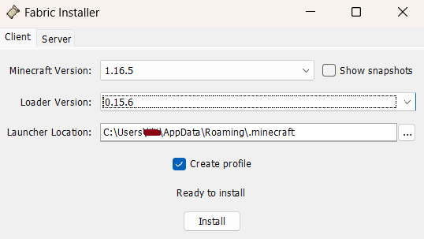
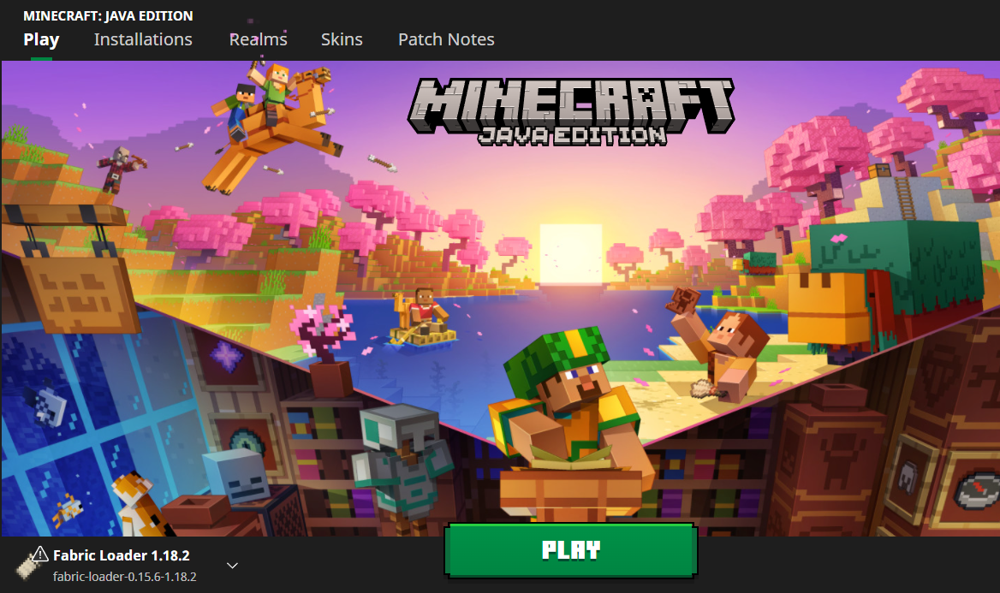

Witamy na Origin SMP
ip serwera: originsmpkuro.aternos.me
keepInventory true
Pobierz paczkę modów: Mody
Wyszukaj na komputerze %appdata% i wejdź do folderu .minecraft
Sprawdź, czy znajduje się w nim folder mods
Jeśli nie, utwórz go
Wypakuj pobrane archiwum do folderu mods
W folderze mods znajdź plik fabric-installer-0.8.0.jar i uruchom go
Zmień wersje według poniższego screenshota i upewnij się, że lokalizacja instalacji kończy się na folderze .minecraft
Uruchom Minecrafta i zmień wersję na fabric-loader-1.16.5
Better Caves — zmienia sposób generacji jaskiń
Better End — dodaje nowe bloki, biomy, przedmioty i moby do Endu
Better Nether — dodaje nowe biomy, struktury, rośliny i moby do Netheru
Cave Biomes — dodaje ponad 25 biomów podziemnych
Oh The Biomes You'll Go [byg] — dodaje 80+ biomów z nowymi blokami
Castle Dungeons — Dodaje strukturę w postaci zamku
When Dungeons Arise — dodaje liczne większe i mniejsze struktury
Mo' Structures — dodaje nowe struktur z zachowaniem klimatu gry, skupione na RPG
RPG-HUD — m.in. pokazuje ilość użyć na narzędziach, stopień zużycia zbroi oraz paski życia innych mobów
Basic Nether Ores — dodaje podstawowe rudy do Netheru
Blockus — dodaje nowe bloki
Explorer's Compass — dodaje kompas, który wyszukuje struktury i do nich prowadzi [na serwerze ma być wykorzystywany tylko w szczególnych przypadkach]
Voxel Map — dodaje mapę z możliwością robienia waypointów
Mermod — dodaje naszyjnik zmieniający w wodzie nogi w ogon, który można barwić
Pehkui — dodaje komendy pozwalające zmieniać różne skale np. wysokość, zasięg, obrażenia od upadku (jest niezbędny do działania innych modów, natomiast jego samego nie jest w planach, aby używać)
Roughly Enough Items — pozwala sprawdzać receptury przedmiotów, włącznie z tymi z modów
Icarus — dodaje skrzydła, z którymi można latać lepiej niż z elytrą
Blockshifter — dodaje blok pozwalający przesuwać inne bloki, np. do łatwego tworzenia bram
Inmis — dodaje plecaki
Trinkets — dodaje sloty na naszyjnik i elytrę/skrzydła. UWAGA, uprasza się o niewkładanie PLECAKA tam, bo się buguje
Lato Origins — dodaje originy Astronos, Axolotl, Cobblestonian, Dimensional Being, Goatlin, God, Iron Golem, Lato, Lava Sharkian, Nukelian, Sharkian, Slimeeq, Tauros, Trashling, Warden
Extra Origins — dodaje originy Floran, Inchling i Piglin
Mob Origins — dodaje Slime'a, Stridera, Guardiana, Evokera, Wilka, Śnieżnego Golema, Wiedźmę, Pszczołę, Lisa
Origins — główny mod dodający originy. Daje Enderiana, Merlinga, Phantoma, Elytriana, Blazeborna, Aviana, Arachnida, Shulkera i Feline
Voidwalker Origins — dodaje originy Voidwalker, Panda, Dragonborn i Drowned
Origins: Umbrellas — dodaje parasol, który chroni przed deszczem i słońcem
Environmental Armor — dodaje przedmioty ułatwiające przeżycie wodnym rasom na lądzie oraz na słońcu